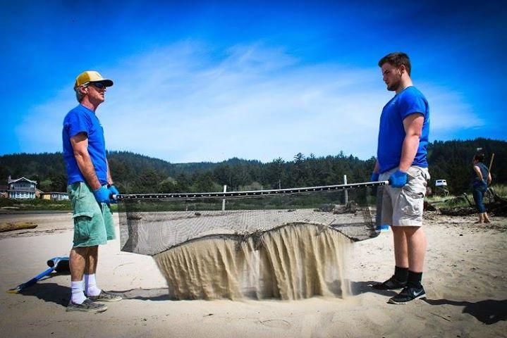

As we all know, plastic is something VERY abundant, along with dangerous, within our ocean. How do we get it out?
To answer this, we have to look at the programs that have been trying to combat this issue for years. The first of which would be the program called “Sea Turtles Forever.”
Although the “Sea Turtles Forever” mainly aims to help conserve sea turtles, they also assist in microplastic removal, as this is still something that still impacts those sea turtles they want to save. As a result, they have created
a new invention in order to combat this huge problem. According to one of their videos, the solution they have found is in a .7 mm mesh called the MIcroplastic Filtration System.

This mesh happens to contain low electrostatic charges, which allows the mesh to contain even 50-micrometer microplastics through an electrostatic attraction. In comparison, an ant is only a couple millimeters. These plastics are a hundredth of that,
which is practically invisible to the naked eye. In addition, this would be practically impossible to pick out by hand.
They start up the removal by setting up the Microplastic Filtration System at a beach that
has been found to be impacted by plastics or is near a volunteer. Next, the sand is shoveled over the filter. This sand would then be sifted through, leaving behind the larger pieces of twigs and plastics of all sizes.
The efficiency
of this comes in that this takes place at beaches, where plastics would get washed up to overtime and are then easily identifiable. In addition, this is all run off of volunteer work, allowing this to become a fairly cheap operation. Although
the price of the filter is $169, the work will be worth it. If you want to help this company with its efforts, the link is
here for volunteering or ordering the filter and
here for donations. In addition,
here is the link for more information about this program.
With this effort present at the beaches, there are three other companies that have focused their
agendas to the oceans. Two of these would have the same general idea, being the groups “4ocean” and “Sabin Project.”.
With this effort present at the beaches, there are three other companies that have focused their agendas to the oceans. Two of these would have the same general idea, being the groups “4ocean” and “Sabin Project.”.
As companies
that have put their focus onto the ocean, “4ocean” and the “Seabin Project” have generally put their resources into manually taking out the plastics. According to their website, the main goal of “4ocean” is to employ people to collect
these plastics, payment of which is determined by the amount gathered. They would then take these plastics and create bracelets, which would be sold to help keep everything funded. There might be a slight risk of small animals potentially
getting caught in the nets, but this risk may be very minuscule with the observant crew that is on deck. If this is the type of company that you want to support, the website for the products would be
her and
here for more information.
In contrast, “Seabin Project” aims for a slightly less hands-on approach. Their website tells us that they plan to achieve this through two inventions:
the seabin and mantra-trawl. The seabin is essentially a bucket that contains filters, which is supposed to be placed near the surface level. This would then allow the plastics to start flowing into the seabin, letting the water drain
out through a tube while leaving the plastic in. Due to being very near the surface, animals are highly unlikely to get caught into this contraptions.
The mantra-trawl, in comparison, is meant to be connected to a boat. This invention is a net that has small enough holes that even microfibers can be collected as its being dragged by the boat. Although extremely small animals may get caught, they may
be easily released back into the wild.
here is the link to order a seabin,
here would be the link for their merchandise store, while
this is the link for their donation page and
here for more information.
With these
two companies being more hands-on, the last company, “Ocean Cleanup”, would try to make it slightly automated.
According to their website, they aim to create this floating coastline. What makes this special is that this “coastline”
is in a U-shape and contains filters that is made to keep in the floating microplastics, which extends 3 meters down. The whole idea behind this is that the “coastline” would encompass all of the plastic by drifting faster with the combined
force of the wind and water. With the plastic getting stuck, ship crews would be called to its location to clean out the trapped plastic. This might sound too good to be true, but that’s partly because it is.
At the end of last year, the first prototype, System 001, was launched. At first, it seemed to have been functioning perfectly. However, it was soon realized that the plastic wasn’t being retained because the System 001 was moving too slow for the plastic,
making it so that much of the plastic left before the crews were able to gather it. In addition, a crack was formed after one of the welding sites wasn’t stable.
Though this may sound bad, this entire plan wasn’t entirely
flawed. For instance, System 001 was oriented in the same direction as the wind and the system would avoid the ecosystems that it is helping. In addition, the plastic wasn’t able to go over the top. Based off of these successes, we can see
that this system was mainly successful. In addition, this was just their first actual test run, meaning future ones will be much better. If this is a cause you are willing to follow,
here is a link for more information and
here is their support
page.
This all just proves to show that many efforts are being put out there in order to get plastic out of our oceans. In addition, you can even get involved with some of them, which proves that you are capable of more good then you may
think at first. If it changes you want, then get out there and help out the environment!